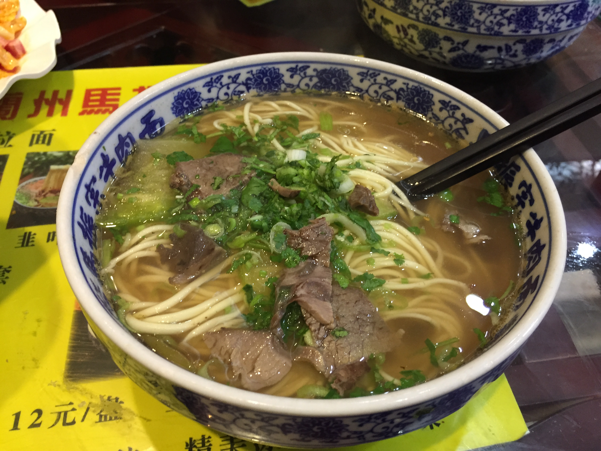

Home
Lanzhou lamian

Description
Lanzhou lamian is a Chinese noodle dish that's known for its hand pulled noodles as the dough is stretched and folded repeatedly by hand to create long, thin noodles with a chewy texture.
The special technique that is used not only aligns the gluten but also enhances the texture of the noodles. The noodles are then cooked in a rich beef broth that is clear and flavourful, served with sliced beef and granished with cilantro, chilli oil and white radish with the option of other garnishes available
Indgredients
- 250g all purpose flour
- 1/4 teaspoon salt
- 125 ml water
- cooking oil to coat the dough
- Chinese chili oil
- 250g beef
- 2 beef bones
- 200g white radish
- chopped coriander
Steps
- Make a smooth, slightly firm dough using flour, salt and water.
- Divide then flatten the dough. Coat with oil then leave to rest.
- Bring a pot of water to boil and cut the dough into thin strips.
- Pull the strips into long noodles one at a time and then proceed to drop into the water.
- Cook for 2-3 minutes and dish out
- Put beed chunks and bones into a pot filled cold water. Bring the water to a full boil, Use a spoon to skim off the froth on the surface
- Add in all the herbs and spices and leave to simmer till beef is cooked through(2 hours)
- Take the beed out to cool and discard the bones, herbs and spices.
- When the beef is cold cut into thin slices.
- Cut radish into thin slices and cook in beef broth until soft(15 minutes).
- Cook noodles in another pot with water and drain and rinse under cold water.
- Place noodles in seving bowls. Pour in hot broth and radish.
- Top with beef and granish with coriander and chili oil.